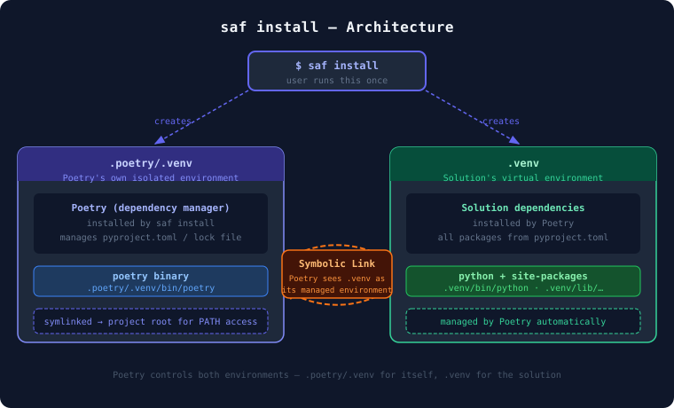
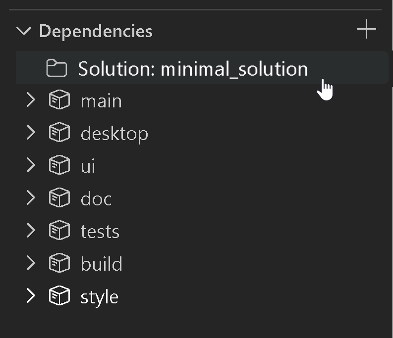
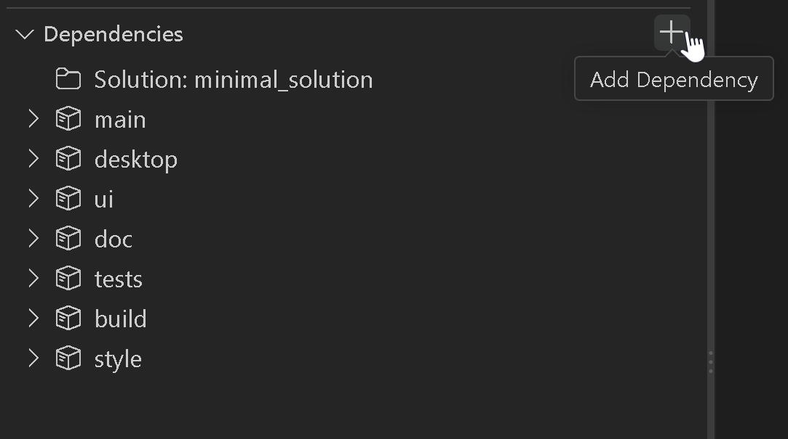
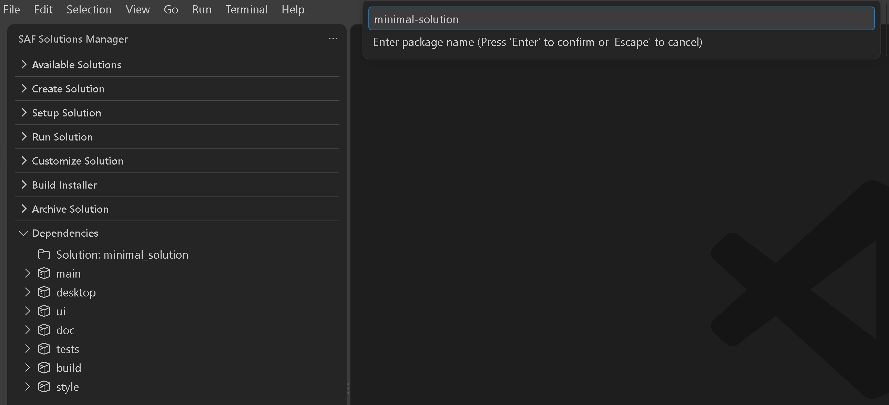
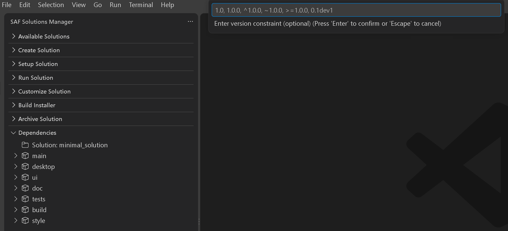
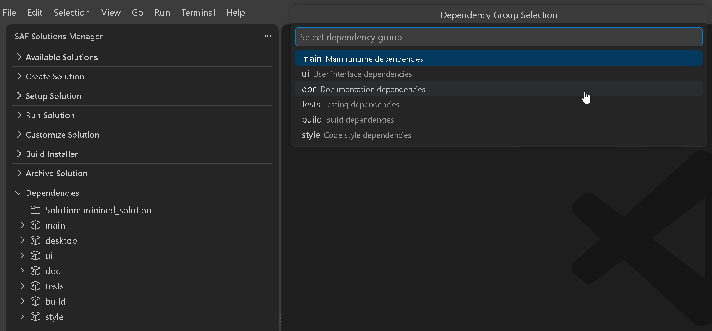
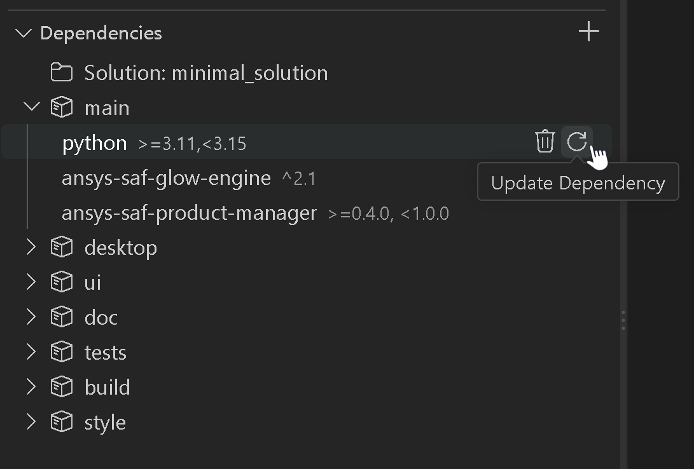
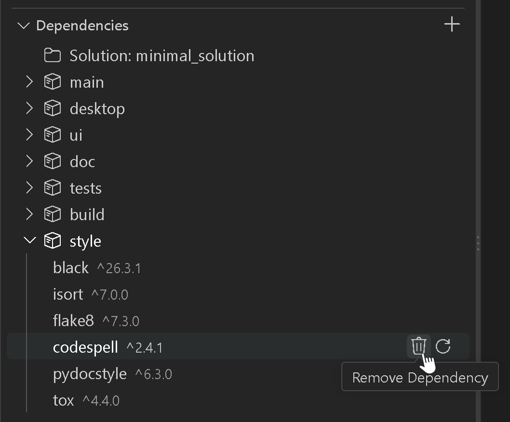
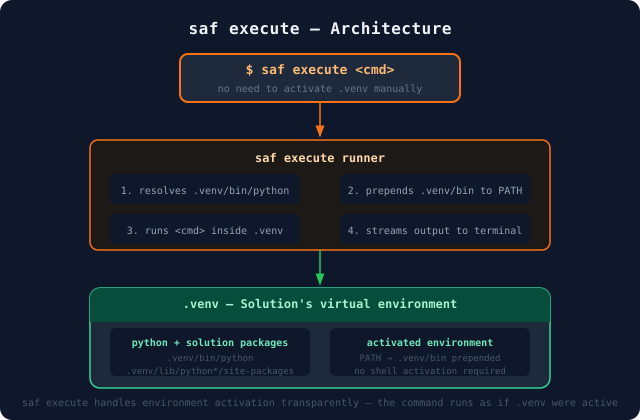

Install#
Installing a solution involves updating the solution’s dependencies and setting up a virtual environment.
This process is required when you have created a new solution. You may also want to install a solution environment when you:
Open a solution in a new workspace for the first time
Want to refresh or recreate the existing environment
Have made significant changes to dependencies
Install the solution environment#
Install the solution environment using SAF CLI.
saf install -f
saf install <app_name> -f
Install the solution environment using Solutions Manager.
Open Visual Studio Code.
In the Activity Bar, click the Solutions Manager icon.
In the Solutions Manager pane, expand the Setup Solution view.

Provide the following values:
Select the solution you want to install.
You can either select an option from the list of available solutions or browse for the solution folder of a different one.
Select an environment cleanup option.
You can either use the default option (No clean-up) or select a different one.
Set up the environment.
Click the Setup solution environment button. Alternatively, you can copy the command under Solution setup command and run it in the terminal.
The installation installs all necessary dependencies. You can monitor its progress in the terminal.
See also
For more detailed information on the installation process, see The saf install command.
The saf install command#
The saf install command sets up the solution’s virtual environment within the application root directory, installs Poetry, and uses it to install the dependencies defined in the application’s pyproject.toml file.
saf install options#
The saf install command has multiple options. To see them all, run the following command:
saf install --help
The following saf install options are available:
Option |
Description |
Default value |
|---|---|---|
|
Cleans up the workspace by deleting the existing |
Disabled |
|
Cleans up the workspace by deleting the existing |
Disabled |
|
Loads environment variables from this file. |
|
|
List of dependency groups to install, separated by commas. For more detailed information on dependency packages and groups, see Solution dependency groups. |
|
Virtual environment installation#
Under the hood, saf install creates two isolated virtual environments:
.poetry/.venv: Poetry’s own environment, keeping the dependency manager separate from the solution..venv: The solution’s virtual environment, managed by Poetry and populated with all packages frompyproject.toml.
A symbolic link connects the two so that Poetry can transparently manage .venv without conflicts, as illustrated in the following diagram:

Attention
Private sources: If your application’s pyproject.toml file declares a private source, you are prompted to provide credentials during installation.
The system validates your credentials and securely stores them as user-level environment variables for future use. If invalid credentials are provided, you are prompted to re-enter them. You can cancel the credential prompt at any time by pressing Ctrl+C.
For more detailed information, see Manage private sources.
Solution dependency groups#
Poetry supports the concept of dependency groups, which are sets of packages that can be installed together. This allows you to install only the dependencies you need for a particular use case, such as development, testing, or documentation.
Solution dependencies defined in the pyproject.toml file are organized into groups that can be installed selectively using the -d/--dependencies option of the saf install command.
Main dependencies#
The packages listed under [tool.poetry.dependencies] in pyproject.toml (the runtime or “main” dependencies) are always installed by saf install. These are not a named dependency group—they are the project’s direct dependencies, such as ansys-saf-glow-engine and ansys-saf-product-manager in the solution template.
Default optional groups#
By default, saf install also requests the optional dependency groups desktop, ui, doc, and build when they are defined in the project’s pyproject.toml.
Additional optional groups#
Other optional groups may be defined for a project. In the solution template, tests and style are available but are not installed by default.
Control which groups are installed#
To specify which optional groups to install, use the
-d/--dependenciesoption withsaf install. For multiple groups, provide a comma-separated list of group names. For example, to install only thetestsandstylegroups, use:saf install -d tests,style
If you pass
-dwith a specific list, only the listed optional groups are requested in addition to the main dependencies. The default selection is not implicitly merged—if you want the defaults, you must include them explicitly. For example, to install the default groups plustests, use:saf install -d desktop,ui,doc,build,tests
To install every optional group defined in the project, use
-d allwithsaf install:saf install -d all
Note
Subsequent runs of saf install that specify additional dependency groups can only add packages to the environment; they do not remove already-installed packages.
To create a clean environment containing only a given set of groups, use the -f (force-clear) option together with -d. This deletes the existing virtual environment and recreates it with the requested groups.
Manage solution dependencies#
Managing dependencies involves adding, updating, or removing individual packages in a solution’s virtual environment, and keeping the environment reproducible and consistent with the packages declared in its pyproject.toml file.
Both SAF CLI and Solutions Manager manage dependencies by driving Poetry, the dependency management system used by SAF solutions. You can use either method, depending on your preference and workflow.
To use SAF CLI to add, update, or remove individual packages, run Poetry commands inside the solution’s virtual environment.
To manage dependencies using the Dependencies view:
Open the solution’s root directory in Visual Studio Code.
In the Activity Bar, click the Solutions Manager icon.
In the Solutions Manager pane, expand the Dependencies view.

The dependency groups shown are populated from the solution’s
pyproject.tomlfile. Expand a group to view the packages installed in the solution environment.Note
Packages installed from a private source are marked with a lock icon. For more information, see Private packages.
Tip
If the environment falls out of sync with
pyproject.tomlorpoetry.lock(for example, after a manual edit), the view shows a warning. To reconcile the environment, click Sync Dependencies or the sync icon in the view’s title bar.
{kind=link}
See also
For more information about using Poetry for dependency management, see the official Poetry documentation.
Add a dependency#
To add a dependency using Poetry, run poetry add inside the solution’s environment.
See also
For the full set of poetry add options, see the official Poetry add command documentation.
To add a dependency using Solutions Manager:
In the Dependencies view title bar, click the Add Dependency icon.

In the field above the editor, enter the name of the package you want to add.

In the field above the editor, enter a package version constraint (optional).
Leave this field empty to let Poetry select the latest compatible version.

For more information about version values, see Version constraints.
In the dropdown list above the editor, select a dependency group.

Note
This list doesn’t include
desktopor any custom groups defined inpyproject.toml. To add a dependency to one of those groups, use SAF CLI instead.Solutions Manager runs the equivalent
poetry addcommand and shows a progress notification, followed by a success or failure message.Expand the group containing the new package and verify that the new package is visible.
{kind=link}
{kind=link}
{kind=link}
{kind=link}
Update a dependency#
To update a dependency using Poetry, run poetry update inside the solution’s environment.
See also
For the full set of poetry update options, see the official Poetry update command documentation.
In the Dependencies view, expand the group containing the package you want to update.
Click the package’s Update Dependency icon.

In the confirmation dialog at the bottom right corner of the window, click Yes.
Solutions Manager runs the equivalent
poetry updatecommand and shows a progress notification, followed by a success or failure message.Verify that the package version has been updated.
{kind=link}
Note
Updating a dependency does not prompt for or accept a version. It updates the package to the latest version allowed by its existing constraint in pyproject.toml, but does not change that constraint. To change a version constraint, add the dependency again with the new constraint, as described in Add a dependency.
Remove a dependency#
To remove a dependency using Poetry, run poetry remove inside the solution’s environment.
See also
For the full set of poetry remove options, see the official Poetry remove command documentation.
In the Dependencies view, expand the group containing the package you want to remove.
Click the package’s Remove Dependency icon.

In the confirmation dialog at the bottom right corner of the window, click Yes.
Solutions Manager runs the equivalent
poetry removecommand and shows a progress notification, followed by a success or failure message.Verify that the package is no longer visible in the group from which it was removed.
{kind=link}
Version constraints#
When adding a dependency, you specify a version constraint that tells Poetry which versions of the package are acceptable. Commonly used formats include:
Exact version:
1.0.0or1.0Caret requirement:
^1.0.0(allows releases that don’t change the leftmost non-zero version component)Tilde requirement:
~1.0.0(allows patch-level updates within the same minor version)Comparison operators:
>=1.0.0,<=1.0.0,>1.0.0,<1.0.0Development version:
0.1dev1
Note
The Solutions Manager Add Dependency version field accepts only the formats listed above. To use a constraint outside this set, use SAF CLI instead. For the full syntax, including wildcards, multiple constraints, and pre-release versions, see the official Poetry Dependency specification documentation.
Private packages#
Dependencies installed from a private source, such as the PyAnsys private PyPI index, require authentication.
Before you add, update, or remove a private package, valid credentials for its source must already be available, as described in Manage private sources. Neither SAF CLI nor Solutions Manager prompts for credentials as part of these actions.
Note
In Solutions Manager, these packages are marked with a lock icon in the Dependencies view. The Add Dependency command does not specify a source explicitly.
Execute commands in the solution environment#
Once a solution is installed, you can use saf execute to run commands inside its virtual environment. This lets you invoke tools such as pytest, sphinx-build, or any other command without manually activating the solution’s virtual environment beforehand.
saf execute <solution_name> "<command>"
The saf execute command#
The saf execute command prepends the solution’s .venv to PATH, so the solution’s Python
interpreter and installed packages take precedence over any other environment on the system.
{kind=link}

Warning
If the binary called in <command> is not present in the solution’s environment, binaries
found in other environments on PATH are used as a fallback.
saf execute options#
The saf execute command has multiple options. To see them all, run the following command:
saf execute --help
The following saf execute options are available:
Option |
Description |
Default value |
|---|---|---|
|
Directory in which the command is executed. |
Solution’s root directory |
|
Loads environment variables from this file. |
|
Command execution example#
This example illustrates how to run a solution’s test using the saf execute command. The command runs pytest in the solution’s virtual environment, using the solution’s Python interpreter and installed packages.
saf execute my-solution "pytest -n 0"
Tip
To pass a command that itself contains spaces or quoted strings, wrap the inner string in single quotes:
saf execute my-solution "python -c 'from datetime import datetime; print(datetime.now())'"
Manage private sources#
For applications that use private sources that require authentication, you can pre-configure credentials to avoid interactive prompts during installation.
Credential precedence order
The system follows a specific order of precedence when looking for credentials:
User session environment variables (highest priority)
Application-specific .env file (lower priority)
If credentials are found at any level, they are validated. If validation fails, you are prompted to enter new credentials interactively.
Environment variable naming convention
The environment variable names are derived from the source name declared in your application’s pyproject.toml file. Given a source name like my-private-source, the
corresponding environment variables are:
Username variable:
POETRY_HTTP_BASIC_MY_PRIVATE_SOURCE_USERNAMEPassword variable:
POETRY_HTTP_BASIC_MY_PRIVATE_SOURCE_PASSWORD
(Recommended) Set user session environment variables#
Set environment variables at the user-session level for persistent, system-wide access:
# Example for a 'my-private-source' source
# Set user-level environment variables (persists across sessions)
[Environment]::SetEnvironmentVariable("POETRY_HTTP_BASIC_MY_PRIVATE_SOURCE_USERNAME", "your-username", "User")
[Environment]::SetEnvironmentVariable("POETRY_HTTP_BASIC_MY_PRIVATE_SOURCE_PASSWORD", "your-token", "User")
# Or using setx command
setx POETRY_HTTP_BASIC_MY_PRIVATE_SOURCE_USERNAME "your-username"
setx POETRY_HTTP_BASIC_MY_PRIVATE_SOURCE_PASSWORD "your-token"
# Example for a 'my-private-source' source
# Add to your shell profile (for example, ~/.bash_profile, ~/.bashrc, or ~/.profile)
export POETRY_HTTP_BASIC_MY_PRIVATE_SOURCE_USERNAME="your-username"
export POETRY_HTTP_BASIC_MY_PRIVATE_SOURCE_PASSWORD="your-token"
# Reload your profile
source ~/.bash_profile
Note
User session environment variables are the preferred method because they:
Apply to all applications that use the same private PyPI source
Persist across terminal sessions
Don’t require management of multiple
.envfiles
Use an application-specific environment file#
Edit the .env file in your application root directory for project-specific credentials:
POETRY_HTTP_BASIC_MY_PRIVATE_SOURCE_USERNAME=john.doe
POETRY_HTTP_BASIC_MY_PRIVATE_SOURCE_PASSWORD=your-access-token
Use custom environment files#
# Use a custom environment file location
saf install <app_name> --env-file /path/to/custom.env
Find your source name#
Check your application’s pyproject.toml file for the source configuration:
[tool.poetry.source]
name = "my-private-source"
url = "https://your-pypi-server.com/simple/"
priority = "primary"
Environment variable naming rules#
Replace hyphens with underscores:
my-company-pypi→MY_COMPANY_PYPIAdd the Poetry prefix and suffix:
POETRY_HTTP_BASIC_<SOURCE_NAME>_USERNAME/PASSWORD
Credential precedence example#
If you have both user session variables and a .env file for the my-private-source source:
# User session (takes precedence)
POETRY_HTTP_BASIC_MY_PRIVATE_SOURCE_USERNAME=session-user
# .env file (ignored for username, used for password)
POETRY_HTTP_BASIC_MY_PRIVATE_SOURCE_USERNAME=env-file-user
POETRY_HTTP_BASIC_MY_PRIVATE_SOURCE_PASSWORD=env-file-token
Result
session-user with env-file-token is used.
See also
If the installation fails, see Installation for common problems and their workarounds. On machines behind a corporate proxy or a TLS-inspecting firewall, see also Corporate environment.